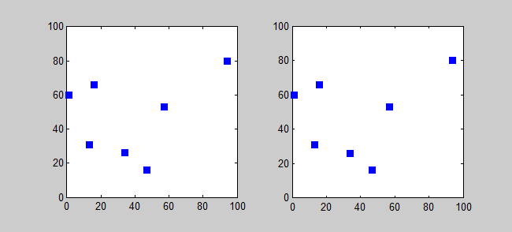
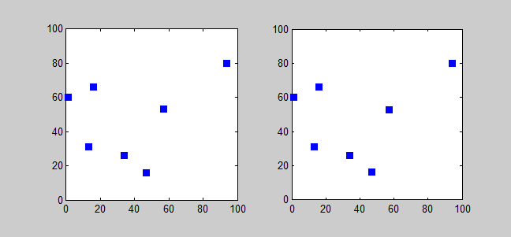
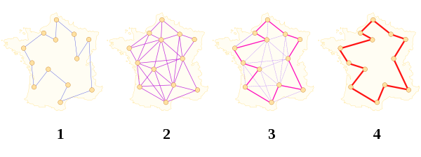

The Travelling Salesman
The travelling salesman problem (also called the travelling salesperson problem or TSP) asks the following question:
"Given a list of cities and the distances between each pair of cities, what is the shortest possible route that visits each city exactly once and returns to the origin city?"
In the theory of computational complexity, the decision version of the TSP (where given a length L, the task is to decide whether the graph has a tour of at most L) belongs to the class of NP-complete problems.
Thus, it is possible that the worst-case running time for any algorithm for the TSP increases superpolynomially (but no more than exponentially) with the number of cities.
Richard M. Karp showed in 1972 that the Hamiltonian cycle problem was NP-complete, which implies the NP-hardness of TSP. This supplied a mathematical explanation for the apparent computational difficulty of finding optimal tours.
TSP can be modelled as an undirected weighted graph, such that cities are the graph's vertices, paths are the graph's edges, and a path's distance is the edge's weight. It is a minimization problem starting and finishing at a specified vertex after having visited each other vertex exactly once. Often, the model is a complete graph (i.e., each pair of vertices is connected by an edge). If no path exists between two cities, adding an arbitrarily long edge will complete the graph without affecting the optimal tour.
Asymmetric and Symmetric
In the symmetric TSP, the distance between two cities is the same in each opposite direction, forming an undirected graph. This symmetry halves the number of possible solutions. In the asymmetric TSP, paths may not exist in both directions or the distances might be different, forming a directed graph. Traffic collisions, one-way streets, and airfares for cities with different departure and arrival fees are examples of how this symmetry could break down.
Computing a Solution
The traditional lines of attack for the NP-hard problems are the following:
- Devising exact algorithms, which work reasonably fast only for small problem sizes.
- Devising "suboptimal" or heuristic algorithms, i.e., algorithms that deliver approximated solutions in a reasonable time.
- Finding special cases for the problem ("subproblems") for which either better or exact heuristics are possible.
Exact Algorithms
The most direct solution would be to try all permutations (ordered combinations) and see which one is cheapest (using brute-force search). The running time for this approach lies within a polynomial factor of Ο(n!), the factorial of the number of cities, so this solution becomes impractical even for only 20 cities.
One of the earliest applications of dynamic programming is the Held–Karp algorithm that solves the problem in time Ο(n22n). This bound has also been reached by Exclusion-Inclusion in an attempt preceding the dynamic programming approach.
Solution to a symmetric TSP with 7 cities using brute force search. Note: Number of permutations:
(7-1)!⁄2 = 360
Improving these time bounds seems to be difficult. For example, it has not been determined whether an exact algorithm for TSP that runs in time Ο(1.9999n) exists.
Other approaches include:
- Various branch-and-bound algorithms, which can be used to process TSPs containing 40–60 cities.
- Solution of a TSP with 7 cities using a simple Branch and bound algorithm. Note: The number of permutations is much less than Brute force search
- Progressive improvement algorithms which use techniques reminiscent of linear programming. Works well for up to 200 cities. Implementations of branch-and-bound and problem-specific cut generation (branch-and-cut); this is the method of choice for solving large instances. This approach holds the current record, solving an instance with 85,900 cities.
- An exact solution for 15,112 German towns from TSPLIB was found in 2001 using the cutting-plane method proposed by George Dantzig, Ray Fulkerson, and Selmer M. Johnson in 1954, based on linear programming. The computations were performed on a network of 110 processors located at Rice University and Princeton University. The total computation time was equivalent to 22.6 years on a single 500 MHz Alpha processor. In May 2004, the travelling salesman problem of visiting all 24,978 towns in Sweden was solved: a tour of length approximately 72,500 kilometres was found and it was proven that no shorter tour exists. In March 2005, the travelling salesman problem of visiting all 33,810 points in a circuit board was solved using Concorde TSP Solver: a tour of length 66,048,945 units was found and it was proven that no shorter tour exists. The computation took approximately 15.7 CPU-years. In April 2006 an instance with 85,900 points was solved using Concorde TSP Solver, taking over 136 CPU-years.
Solution Visualizations
Solution to a symmetric TSP with 7 cities using brute force search. Note: Number of permutations:
(7-1)!⁄2 = 360

Solution of a TSP with 7 cities using a simple Branch and bound algorithm. Note: The number of permutations is much less than Brute force search
Heuristic Solutions
Various heuristics and approximation algorithms, which quickly yield good solutions, have been devised. These include the Multi-fragment algorithm. Modern methods can find solutions for extremely large problems (millions of cities) within a reasonable time which are with a high probability just 2–3% away from the optimal solution.
Several categories of heuristics are recognized.

Nearest Neighbour algorithm for a TSP with 7 cities. The solution changes as the starting point is changed
The nearest neighbour (NN) algorithm (a greedy algorithm) lets the salesman choose the nearest unvisited city as his next move. This algorithm quickly yields an effectively short route. For N cities randomly distributed on a plane, the algorithm on average yields a path 25% longer than the shortest possible path. However, there exist many specially arranged city distributions which make the NN algorithm give the worst route. This is true for both asymmetric and symmetric TSPs. Rosenkrantz et al. showed that the NN algorithm has the approximation factor Θ(log|V|) for instances satisfying the triangle inequality. A variation of NN algorithm, called Nearest Fragment (NF) operator, which connects a group (fragment) of nearest unvisited cities, can find shorter routes with successive iterations. The NF operator can also be applied on an initial solution obtained by NN algorithm for further improvement in an elitist model, where only better solutions are accepted.
Several categories of heuristics are recognized.
Ant Colony Optimization
Artificial intelligence researcher Marco Dorigo described in 1993 a method of heuristically generating "good solutions" to the TSP using a simulation of an ant colony called ACS (ant colony system).[30] It models behaviour observed in real ants to find short paths between food sources and their nest, an emergent behaviour resulting from each ant's preference to follow trail pheromones deposited by other ants.

ACS sends out a large number of virtual ant agents to explore many possible routes on the map. Each ant probabilistically chooses the next city to visit based on a heuristic combining the distance to the city and the amount of virtual pheromone deposited on the edge to the city. The ants explore, depositing pheromone on each edge that they cross, until they have all completed a tour. At this point the ant which completed the shortest tour deposits virtual pheromone along its complete tour route (global trail updating). The amount of pheromone deposited is inversely proportional to the tour length: the shorter the tour, the more it deposits.
 Ant colony optimization algorithm for a TSP with 7 cities: Red and thick lines in the pheromone map indicate presence of more pheromone
Ant colony optimization algorithm for a TSP with 7 cities: Red and thick lines in the pheromone map indicate presence of more pheromone
Computational Complexity
The problem has been shown to be NP-hard (more precisely, it is complete for the complexity class FPNP; see function problem), and the decision problem version ("given the costs and a number x, decide whether there is a round-trip route cheaper than x") is NP-complete. The bottleneck traveling salesman problem is also NP-hard. The problem remains NP-hard even for the case when the cities are in the plane with Euclidean distances, as well as in a number of other restrictive cases. Removing the condition of visiting each city "only once" does not remove the NP-hardness, since it is easily seen that in the planar case there is an optimal tour that visits each city only once (otherwise, by the triangle inequality, a shortcut that skips a repeated visit would not increase the tour length).
Complexity of Approximation
In the general case, finding a shortest travelling salesman tour is NPO-complete. If the distance measure is a metric (and thus symmetric), the problem becomes APX-complete and the algorithm of Christofides and Serdyukov approximates it within 1.5. The best known inapproximability bound is 123/122.
If the distances are restricted to 1 and 2 (but still are a metric) the approximation ratio becomes 8/7. In the asymmetric case with triangle inequality, only logarithmic performance guarantees are known, the best current algorithm achieves performance ratio 0.814 log(n); it is an open question if a constant factor approximation exists. The best known inapproximability bound is 75/74.
The corresponding maximization problem of finding the longest travelling salesman tour is approximable within 63/38. If the distance function is symmetric, the longest tour can be approximated within 4/3 by a deterministic algorithm[53] and within 1 25 ( 33 + ε ) {\displaystyle {\tfrac {1}{25}}(33+\varepsilon )} {\tfrac {1}{25}}(33+\varepsilon ) by a randomized algorithm.
Human and Animal Performance
The TSP, in particular the Euclidean variant of the problem, has attracted the attention of researchers in cognitive psychology. It has been observed that humans are able to produce near-optimal solutions quickly, in a close-to-linear fashion, with performance that ranges from 1% less efficient for graphs with 10-20 nodes, and 11% less efficient for graphs with 120 nodes. The apparent ease with which humans accurately generate near-optimal solutions to the problem has led researchers to hypothesize that humans use one or more heuristics, with the two most popular theories arguably being the convex-hull hypothesis and the crossing-avoidance heuristic. However, additional evidence suggests that human performance is quite varied, and individual differences as well as graph geometry appear to affect performance in the task. Nevertheless, results suggest that computer performance on the TSP may be improved by understanding and emulating the methods used by humans for these problems, and have also led to new insights into the mechanisms of human thought. The first issue of the Journal of Problem Solving was devoted to the topic of human performance on TSP, and a 2011 review listed dozens of papers on the subject.
A 2011 study in animal cognition entitled “Let the Pigeon Drive the Bus,” named after the children's book Don't Let the Pigeon Drive the Bus!, examined spatial cognition in pigeons by studying their flight patterns between multiple feeders in a laboratory in relation to the travelling salesman problem. In the first experiment, pigeons were placed in the corner of a lab room and allowed to fly to nearby feeders containing peas. The researchers found that pigeons largely used proximity to determine which feeder they would select next. In the second experiment, the feeders were arranged in such a way that flying to the nearest feeder at every opportunity would be largely inefficient if the pigeons needed to visit every feeder. The results of the second experiment indicate that pigeons, while still favoring proximity-based solutions, “can plan several steps ahead along the route when the differences in travel costs between efficient and less efficient routes based on proximity become larger.” These results are consistent with other experiments done with non-primates, which have proven that some non-primates were able to plan complex travel routes. This suggests non-primates may possess a relatively sophisticated spatial cognitive ability.
Further Resources
Travelling Salesman, by director Timothy Lanzone, is the story of four mathematicians hired by the U.S. government to solve the most elusive problem in computer-science history: P vs. NP.
www.tspvis.com
A visualization tool for varios algorithms solving the travelling salesman problem.
www.demonstrations.com/
TravelingSalesmanProblem
A demonstration where the viewer can change the position of the nodes and an algorithm continiously approximates a solution.